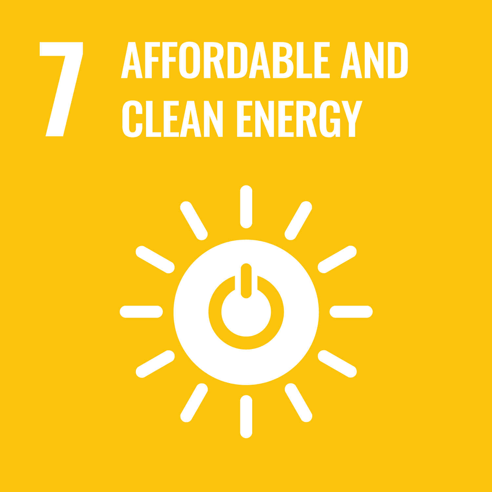
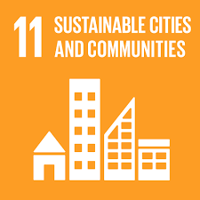
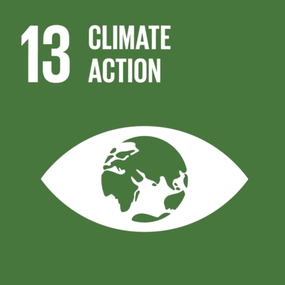

Aerial Wind Sensing | Wind-Field Reconstruction | Physics-Informed Learning
My current project at GTIIT develops low-cost multirotor drones as mobile wind-sensing platforms. The work estimates wind speed and direction from drone telemetry, attitude response, and reference calibration, then reconstructs local wind fields using Physics-Informed Neural Networks (PINNs) and flow-consistency constraints. In parallel, I work on physics-guided forecasting for wind-energy and grid-reliability systems, and climate-risk intelligence for urban thermal extremes.
The central line is aerial wind sensing and wind-field reconstruction. Two parallel lines extend the same physics-guided learning philosophy to renewable-energy forecasting and urban climate-risk prediction.

SDG 7 Affordable and Clean Energy
SDG 11 Sustainable Cities and Communities
SDG 13 Climate ActionCurrent research trends in physics-informed AI for wind forecasting and urban climate resilience · AI for energy security, climate resilience, and infrastructure intelligence
Recent work in physics-informed forecasting, aerial wind sensing, urban thermal risk, and embedded deployment.
My research turns sparse, noisy field measurements into physically credible estimates of wind, energy-system behavior, and climate risk. The current GTIIT project is the main line; the other two areas run in parallel and support the same sensing-to-decision agenda.
Low-cost drone-based wind estimation and wind-field reconstruction. I use multirotor telemetry, vehicle attitude, wind-relative direction, and reference calibration to infer ambient wind, then recover local flow structure with PINNs and flow-consistency constraints.
Physics-guided forecasting for wind-energy and grid-reliability systems. I design short-horizon models that combine temporal learning, physical transport structure, and regime-aware correction under ramps, extremes, and site-dependent variability.
Climate-risk intelligence for urban heat and infrastructure resilience. I develop physics-informed spatio-temporal models that preserve spatial context, physical plausibility, and useful lead time for intervention-oriented forecasting.
Selected projects organized around the main postdoctoral direction and two parallel research lines.
Current project at GTIIT
Develops calibration and learning methods that estimate wind speed and direction from low-cost multirotor telemetry, attitude response, and reference measurements during real outdoor flights.
Current project at GTIIT
Reconstructs local wind fields from sparse aerial observations using Physics-Informed Neural Networks, flow regularization, and consistency constraints that encode physically plausible wind evolution.
Parallel research line
Couples adaptive feature selection, physical wind-field structure, and sequence learning to improve short-horizon prediction for renewable-energy integration and grid reliability.
Parallel research line
Uses physics-informed ensemble learning and residual spatio-temporal correction to forecast city-center thermal extremes and support infrastructure-resilience decisions.
Recent academic updates.
Track record from embedded systems and high-throughput vision pipelines to physics-informed forecasting for energy security, climate resilience, and constrained hardware deployment.
Guangdong Technion–Israel Institute of Technology (GTIIT) · Mar 2026 – Present
I work on low-cost drone-based wind estimation and wind-field reconstruction. This research uses multirotor telemetry, reference wind measurements, and physics-informed learning to estimate ambient wind and recover local flow structure from sparse aerial observations.
The current focus is robust estimation under real flight conditions, Physics-Informed Neural Network reconstruction, cross-platform generalization, and deployable inference pipelines for field experiments and atmospheric sensing.
Central South University · Sept 2020 – Dec 2025
I design physics-informed sequence models for wind, load, and near-surface temperature forecasting, targeting grid reliability and urban thermal-stress early warning. This includes regime-adaptive focal losses, adaptive physics penalties, attention-equipped hybrid recurrent / convolutional temporal modules, and hardware-aware optimization for Jetson-class devices.
I led research end-to-end from problem formulation to publication, producing 6 first-author papers. The work aligns with a provincial Key R&D program on wind energy and grid optimization (Project 2020WK2007).
Bond and Built Pvt Ltd · Jul 2024 – Mar 2025
Built and scaled a footwear analytics pipeline handling 60+ concurrent video streams and ~50,000 daily inferences. Delivered production-grade market intelligence under real deployment and bandwidth constraints.
DLISION · May 2021 – Sept 2022
Led semantic segmentation and real-time detection pipelines. Tuned UNet variants with attention and focal loss to improve segmentation accuracy by ~3% over in-house baselines and optimized inference for deployment.
iUSE School of Engineering & IIUI · 2013 – 2020
Taught embedded systems, programming, and discrete-time signal processing. Built an Instrumentation & Measurement Lab for sensor-driven data acquisition in MATLAB. Supervised applied student projects in energy management, safety telemetry, and secure voting.
Investigated GAN-based medical diagnostics for breast cancer, with emphasis on data augmentation and robustness.
PhD in Control Science & Machine Learning
Central South University, China
Sept 2020 – Dec 2025
MS in Electronic Engineering Gold Medalist
International Islamic University, Pakistan
Sept 2015 – Aug 2017
BS in Electronic Engineering
International Islamic University, Pakistan
Sept 2006 – Aug 2010
Lightweight, deployment-aware tooling. Built for reproducibility, ablation, and on-device inference.
MIT License · Python ≥3.9
Ensemble Deep Random Vector Functional Link with skip connections (edRVFL-SC). Delivers deep-ML–level accuracy without GPU training, using closed-form layer solves and feature reuse. Targets ultra-fast training and inference on CPU and embedded boards.
pip install ed-rvfl-sc
PyTorch · Temporal CNNs / LSTM / Transformer
Preprocessing and dataset tooling for time-series forecasting experiments. Sliding windows, normalization flows, train/val/test slicing, and ready-to-train tensors for LSTM, TCN, Transformer, and iTransformer-style models.
pip install timemesh
TensorFlow · Vision Transformer · Focal Loss
Transformer-based Swin-UNet segmentation stack for earth observation, medical imaging, and industrial perception. Includes attention backbones and robust Focal Loss settings for rare-structure segmentation.
pip install keras-swin-unet
I welcome research correspondence on low-cost drone-based wind estimation, PINN-based wind-field reconstruction, physics-guided energy forecasting, and climate-risk intelligence.
Guangdong Technion–Israel Institute of Technology (GTIIT), Shantou, Guangdong, China.